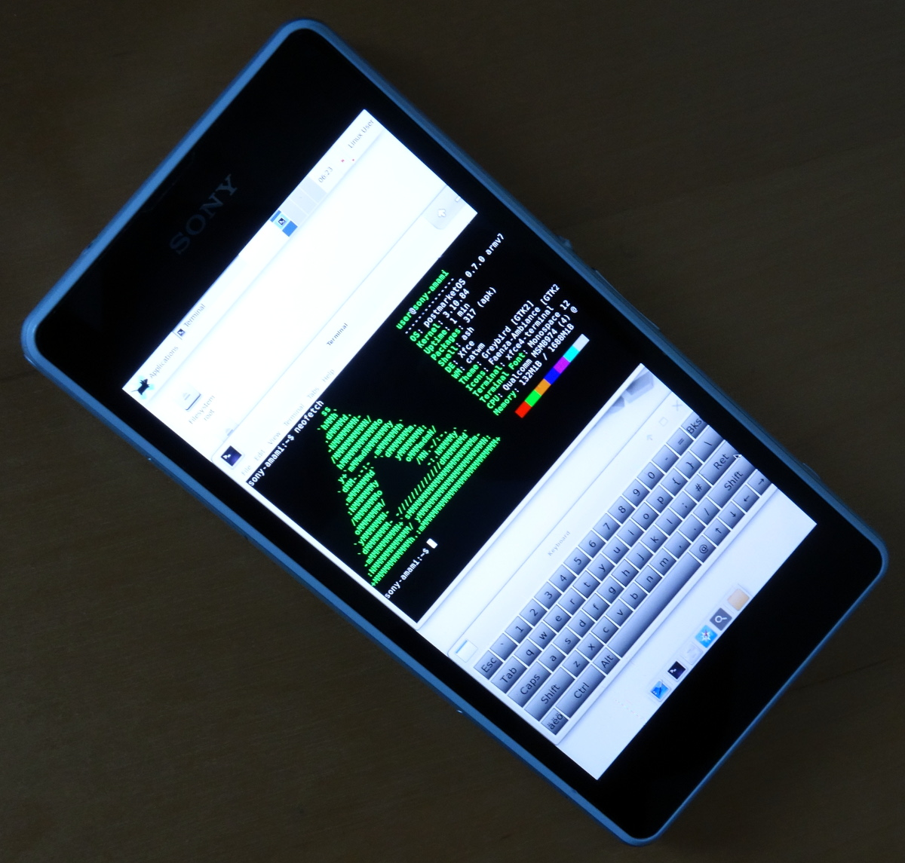

Sony Xperia Z1 Compact (sony-amami)
|
 Sony Xperia Z1C | |
| Manufacturer | Sony |
|---|---|
| Name | Xperia Z1 Compact (Z1C) |
| Codename | sony-amami |
| Released | 2014 |
| Category | testing |
| Original software | Android 4.3 on Linux 3.4 |
| Hardware | |
| Chipset | Qualcomm Snapdragon 800 (MSM8974) |
| CPU | Quad-core 2.2 GHz Krait 400 |
| GPU | Adreno 330 |
| Display | 720x1280 IPS |
| Storage | 16 GB |
| Memory | 2 GB |
| Architecture | armv7 |
{kind=link}
| USB Networking |
Works
|
|---|---|
| Flashing |
Works
|
| Touchscreen |
Works
|
| Display |
Works
|
| WiFi |
Works
|
| FDE | |
| Mainline |
Partial
|
| Battery | |
| 3D Acceleration | |
| Audio | |
| Bluetooth | |
| Camera | |
| GPS | |
| Mobile data | |
| SMS | |
| Calls | |
| USB OTG | |
| NFC | |
| Accelerometer | |
|---|---|
| Magnetometer | |
| Ambient Light | |
| Proximity | |
| Hall Effect | |
| Barometer | |
| Power Sensor | |
| Camera Flash | |
|---|---|
| Keyboard | |
| Touchpad | |
| USB-A | |
| HDMI/DP | |
| Ir TX | |
| Ir RX | |
| Stylus | |
| Haptics | |
| Ethernet | |
| FOSS bootloader | |
Contributors
- ata2001 (porting and testing)
- ollieparanoid (help on IRC)
- MartijnBraam (help on IRC)
- robb4 (help on IRC)
- lawl (help on IRC)
- bshah (help on IRC)
- mmaret (help on IRC)
Users owning this device
- Ata2001
- Neilvandyke
- PureTryOut (Notes: three phones)
Special keycombo's
- Boot to recovery: hold volume down and power button till the phone shakes
- Boot to bootloader: unplug device, hold volume up and plug usb into device
- Reset if stuck: hold volume up and power button till the phone shakes
Issues
- No splash in initramfs.
- When USB charger plugged in when device is off, PostmarketOS "Loading..." screen is displayed continuously.
Building and Flashing
Follow Sony's instructions to unlock the bootloader.
./pmbootstrap.py init
User interface support (with current downstream kernel; might change when replaced with mainline kernel):
- Works: Xfce4, MATE (might need programs installed), Matchbox, Weston
- Believed NOT to work: Hildon (yellow trees on square area of display), Plasma Mobile (needs acceleration?)
Build with FDE disabled (because, with FDE enabled, it looks like the device will just hang on boot at "Loading..." screen).
./pmbootstrap.py zap
./pmbootstrap.py install
Before unlocking the bootloader, you might want to back up your TA partition, so that you could restore the device to more of a factory state (including DRM keys for a lot of proprietary enchantments to display and camera)
Before flashing, you must make sure that the bootloader is unlocked (or `flash_rootfs` will fail with "writing 'system'... FAILED"), which seems to require an IMEI-specific unlock code from Sony, which is sent to the device using `fastboot`: https://developer.sony.com/develop/open-devices/get-started/unlock-bootloader/how-to-unlock-bootloader/
To get the device into fastboot mode: power it off, remove USB cable, hold down Volume-Up while plugging in USB cable. The notification light bar at the top of the phone will very briefly flash red, and then turn blue. Then you can stop holding down Volume-Up, and the device should in fastboot mode.
./pmbootstrap.py flasher flash_rootfs
./pmbootstrap.py flasher flash_kernel
The `flash_rootfs` took about 1 minute, and `flash_kernel` took 5-10 seconds.
After flashing, you can unplug the USB cable, and the device will be off. Then hold down the power button for a second or few, to turn it on, like normally.
UI Usability
If you select `xfce4` UI when building, after you boot it, you can make it more usable on the small display by doing to menu item "Applications -> Settings -> Appearance", then selecting the "Fonts" tab, then adjusting the DPI up. If you can't press the tiny GUI buttons to adjust the DPI, you can first adjust the font size up (and if the scrollbar for the font size is too small, you can adjust it up in small increments).